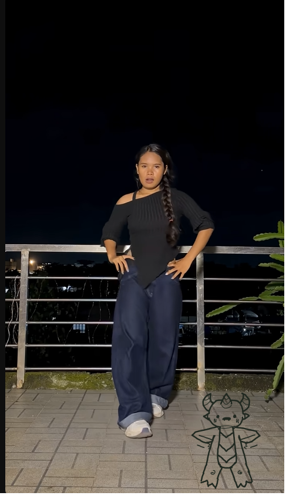

Dance pictogram joint rig
Rotate a joint to see its child parts follow. Switch the hand pose or Lenny’s viewing profile without changing the hierarchy.
Original gameplay reference
This is the supplied static reference. The articulated characters above are rendered live from the original transparent parts.

Left and right refer to the viewer’s sides. Pivot edits remain in this page until downloaded. No game clock, scoring, camera, or video playback is attached to this demonstration.